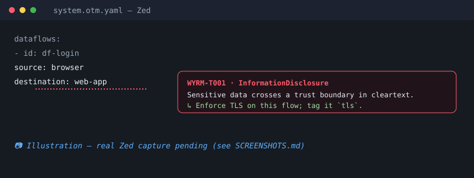

See it work
A real .threatmodel/shop.otm.yaml — a checkout across four trust zones. Wyrm
renders the data-flow diagram and finds the flaws; the flagged flows light up
red (critical) and amber
(medium), and the session cache is flagged for sitting in the DMZ.
wyrm diagram
flowchart LR
subgraph tz_internet["Internet"]
browser["Browser"]
end
subgraph tz_dmz["DMZ"]
gateway["API Gateway"]
cache["Session Cache"]
end
subgraph tz_private["Private Network"]
orders["Orders Service"]
payments["Payments Service"]
end
subgraph tz_data["Data Tier"]
db["Orders DB"]
end
browser -->|"Submit order"| gateway
gateway -->|"Place order"| orders
orders -->|"Charge card"| payments
orders -->|"Persist order"| db
gateway -->|"Read session"| cache
classDef flagged stroke:#ff5c6c,stroke-width:2px;
class cache flagged
linkStyle 0 stroke:#ff5c6c,stroke-width:3px
linkStyle 1,3 stroke:#ffd24d,stroke-width:2px
wyrm analyzetls/https once encrypted.
HIGH Tampering Unencrypted flow across a trust boundary (Submit order)
HIGH ElevationOfPrivilege Datastore without an auth boundary (Session Cache)
WYRM-T004 — the cache sits in the DMZ; move it to a private zone.
MED Spoofing External entity flow lacks authentication (Submit order)
… + 2 more medium (Place order, Persist order)
6 finding(s). — exits non-zero on HIGH+, failing the build.
In your editor
Editors run the same engine as a language server: open a *.otm.yaml and
findings appear inline as you type. Same diagnostics in the editor and in CI — they never
disagree. Integrations for Zed,
VS Code, IntelliJ, and
Obsidian — see the editor setup guide.

Getting started
-
Install the CLI
Grab a prebuilt binary from the releases — no toolchain needed:
# Linux x86_64 curl -sSL https://github.com/1ARdotNO/wyrm/releases/latest/download/wyrm-x86_64-unknown-linux-gnu.tar.gz | tar -xz # macOS: wyrm-aarch64-apple-darwin.tar.gz (Apple Silicon) · wyrm-x86_64-apple-darwin.tar.gz (Intel)
Or build from source with Cargo:
cargo install --git https://github.com/1ARdotNO/wyrm wyrm-cli
-
Add a model — or generate one
Drop a model in
.threatmodel/at your repo root so it lives with the code:mkdir -p .threatmodel $EDITOR .threatmodel/system.otm.yaml
Already have a
docker-compose.yml? Generate a baseline from your topology, then annotate it:wyrm init # → .threatmodel/<project>.otm.yaml (services, zones, flows)
-
Analyze & diagram
wyrm validate # structural checks wyrm analyze # STRIDE findings (exits non-zero on HIGH+) wyrm diagram # Mermaid data-flow diagram
-
Gate it in CI
- run: cargo install --git https://github.com/1ARdotNO/wyrm wyrm-cli - run: wyrm analyze # fails the build on a real design flaw
Writing a model
A model is OTM — trust zones, assets, components, and dataflows. Tag a flow
tls and the encryption findings clear.
otmVersion: 0.2.0
project: { id: shop, name: Shop }
trustZones:
- { id: tz-internet, name: Internet, risk: { trustRating: 10 } }
- { id: tz-private, name: Private, risk: { trustRating: 80 } }
assets:
- id: pii
name: Customer PII
risk: { confidentiality: 100, integrity: 80, availability: 50 }
components:
- { id: api, name: API, type: web-service, parent: { trustZone: tz-internet },
assets: { processed: [pii] } }
- { id: db, name: DB, type: database, parent: { trustZone: tz-private } }
dataflows:
- { id: save, name: Save profile, source: api, destination: db,
assets: [pii], tags: [tls] }
Run it in CI
Pull a prebuilt binary from a release and wire wyrm into your PRs. Each push regenerates the model from your infra, merges in any mitigations a reviewer added (they're never clobbered), commits the refresh back, and fails the check if a high/critical finding is unresolved.
name: Threat model
on: pull_request
permissions:
contents: write # to commit the refreshed model back to the PR
jobs:
wyrm:
runs-on: ubuntu-latest
steps:
- uses: actions/checkout@v5
- name: Install wyrm
run: |
curl -sSL https://github.com/1ARdotNO/wyrm/releases/latest/download/wyrm-x86_64-unknown-linux-gnu.tar.gz | tar -xz
mkdir -p "$HOME/.local/bin" && mv wyrm "$HOME/.local/bin/"
echo "$HOME/.local/bin" >> "$GITHUB_PATH"
- name: Refresh the threat model (keeps your mitigations)
run: wyrm init --from k8s/ --output .threatmodel/app.otm.yaml
- name: Commit model updates
run: |
git config user.name "wyrm[bot]"
git config user.email "wyrm@users.noreply.github.com"
git add .threatmodel/
git diff --cached --quiet || { git commit -m "chore: refresh threat model"; git push; }
- name: Gate on findings
run: wyrm analyze .threatmodel/app.otm.yaml --fail-on high
Make Gate on findings a required status check. The severity is configurable
(--fail-on medium|high|critical). When a finding blocks, a reviewer pulls the branch,
adds the mitigation (a tls tag, an auth control, a top-level mitigation), and pushes —
the next run merges their edit, the finding clears, and the check goes green. No drawing, no separate
tool: the threat model rides along with the change.
Extend the rules
The STRIDE catalogue is data, not code — add your own rules without recompiling. A rule is a target, a set of predicates (AND-ed), and a finding:
# .threatmodel/rules.yaml
rules:
- id: ACME-001
name: Databases must not sit in an internet-facing zone
stride: ElevationOfPrivilege
severity: critical
target: component # or: dataflow
when:
- kind: componentKindIn
kinds: [database]
- kind: lowTrustZone
maxTrust: 60
description: Company policy ACME-001.
mitigation: Move the database to the data tier (trustRating >= 70).
Predicates include crossesTrustBoundary, notEncrypted,
carriesSensitiveData, componentKindIn, and lowTrustZone.
CLI: wyrm analyze --rules rules.yaml — or just drop the file at
.threatmodel/rules.yaml and it's picked up automatically.
CI (declarative): commit .threatmodel/rules.yaml and the same
wyrm analyze in your pipeline loads it — org-wide policies gate every PR with no
extra flags.
Why not just use…?
| Editing | Storage format | Model source | In-repo / CI gate | Engine | |
|---|---|---|---|---|---|
| Threat Dragon | GUI canvas | tool-specific JSON | hand-drawn | no | manual |
| pytm | Python program | imperative .py | hand-coded | partial | Python threat lib |
| Threagile | text (YAML) | own YAML schema | hand-written | yes | Go rules |
| wyrm | your editor (text) | OTM (standard) | auto-detected + reconciled | yes | Rust, data-driven |
OTM is a published, platform-independent standard, so a wyrm model isn't locked to wyrm. The STRIDE catalogue is data — grow it without recompiling.
Roadmap
- shipped OTM engine,
wyrmCLI + CI gate,wyrm-lsp, custom rules - shipped
wyrm init— baseline from docker-compose, Kubernetes/Istio, Terraform (merge-aware reconcile) - shipped
wyrm import/export— Threagile, pytm, and JSON Canvas ↔ OTM - shipped Editors — Zed, VS Code, Obsidian, IntelliJ, and any LSP editor
- shipped AI skill — Claude, Copilot, ChatGPT
- next Marketplace distribution — crates.io, VS Code Marketplace, Obsidian community, Homebrew
- later Browser sidecar editor · Cloudflare/Fastly edge-WAF detection
Attribution
- Open Threat Model (OTM) — the file format wyrm reads and writes.
- OWASP pytm (MIT) — the STRIDE threat library adapted into wyrm's rule catalogue.
- OWASP Threat Dragon — the mission and inspiration.
- Mermaid — diagram rendering on this page.
- lsp-server / lsp-types — the language-server plumbing.
- CI/security philosophy modeled on the author's jync project — CI as the safety net, aggressive Renovate automerge.
Wyrm is MIT licensed.